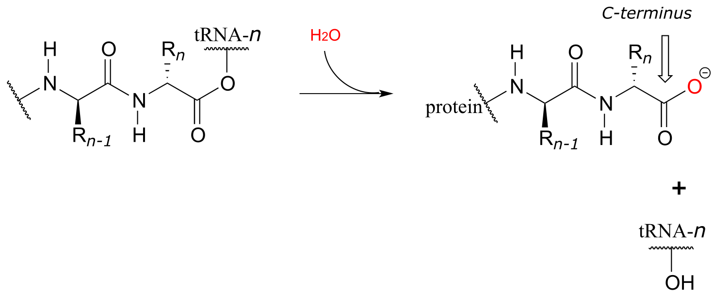

11: Nucleophilic acyl substitution reactions
Contents
11: Nucleophilic acyl substitution reactions#

Introduction#
The 26th of July, Notice is given to the Sheriffs, that in the Street of Lescalle, a Part of the old Town inhabited only by poor People, Fifteen Persons are suddenly fallen sick: They dispatch thither Physicians and Surgeons; they examine into the Distemper, and make Report; some, that ‘tis a Malignant Fever; others, a contagious or pestilential Fever, occasioned by bad Food, which Want had long forced those poor Creatures to live upon …
The 27th, Eight of those Sick dye; the Sheriffs themselves go to their Houses to cause them to be searched; Buboes [swelling of the lymph nodes] are found on Two of them: The Physicians and Surgeons still hold the same Language, and impute the Cause of the Distemper to unwholsome Food. Notwithstanding which, as soon as Night comes, M. Moustier repairs to the Place, sends for Servants from the Infirmaries, makes them willingly or by Force, take up the Bodies, with all due Precautions; they are carried to the Infirmaries, where they are buried with Lime; and all the rest of the Night he causes the remaining Sick, and all those of their Houses, to be removed to the Infirmaries.
The 28th, very early in the Morning, Search is made every where for those who had Communication with them, in order to confine them: Other Persons in the same Street fall sick, and some of those who first sicken’d dye. ..
The People who love to deceive themselves, and will have it absolutely not to be the Plague, urge a Hundred false Reasons on that Side. Would the Plague, say they, attack none but such poor People? Would it operate so slowly?
Let them have but a few Days Patience, and they will see all attacked without Distinction, with the swiftest Rage, and the most dreadful Havock, that ever was heard of.
(source: Gutenberg Project
http://www.gutenberg.org/files/45673/45673-h/45673-h.htm)
In late May of 1720, a ship arrived in the Mediterranean port city of Marseille, having recently departed from Cyprus and Tripoli. Although several crew members had fallen ill and died during the journey, the ship was allowed to unload after only a very brief quarantine, the result of political pressure on port authorities from local businessmen who wanted quick access to the valuable silk and cotton waiting in the ship’s hold.
Along with silk and cotton, the hold carried rats. The rats, in turn, carried fleas. The fleas carried a microscopic mass murderer: Yersinia pestis, the species of bacteria that causes bubonic plague.
It is next to impossible to estimate how many people have died from bubonic plague over the course of human history. In the time of the ‘Black Death’ in the 14th century, it wiped out more than half the population of Europe. In the Great Plague of Marseille in 1720, over 100,000 people succumbed to Y. pestis infection in the city and surrounding provinces. At the height of the outbreak, corpses piled up in city streets, and a fortified wall, the ‘mur de la peste’ was constructed in an attempt to prevent people from traveling north to the neighboring city of Aix.
Throughout history, bacteria have been the cause of untold human death and suffering, making the threat posed by more obviously frightening species - lions and bears, spiders and snakes – seem inconsequential by comparison. As recently as the mid-1940s, a minor cut or cold could become a life-threatening event if a bacterial infection were to set in, and even in developed countries, one in twenty infants did not survive to celebrate their first birthday.
Since then, the infant mortality rate in developed countries has declined by a factor of ten. You probably don’t worry very much when a small cut on your hand becomes infected. The idea of half of the population of the United States dying in a plague is, in most people’s minds, the stuff of zombie movies, not reality. Bacteria are, for now at least, no longer public enemy #1.
How did this happen?
For an answer, we move to a September morning in 1928, in the laboratory of Alexander Fleming, a Scottish bacteriologist working at St. Mary’s Hospital in London. As a young man serving in the British Medical Corps during World War I, Fleming saw first-hand how deadly bacteria could be, as he watched countless soldiers in his battlefield hospital die from infected wounds. After returning to civilian life, he began to study Staphylococci bacteria, a common source of life-threatening infections in humans, hoping to discover new antibacterial agents that were more effective than those he had used in the war. He spent a lot of his time growing Staphylococcus cultures in petri dishes for his experiments, and, notoriously untidy, he tended to leave piles of culture dishes lying around his lab. One morning, he returned from a short vacation to find that one of the cultures he had left out had some mold growing on it. He was about to throw it away, but happened to notice something curious: surrounding the small spot of mold was a circle of clear medium, where no bacteria were growing. He realized that the mold must be secreting something that killed bacteria.
As it turned out, the mold was a of strain called Penicillium notatum, and the ‘something’ killing the bacteria was an organic compound that came to be known as penicillin.

Fleming published his findings in the British Journal of Experimental Pathology, but made only passing reference to the potential therapeutic value of penicillin. The paper received little attention.
Fast-forward now to early February 1941, with the world once again at war. One morning, a policeman named Albert Alexander living in Oxford, England, had an unfortunate gardening accident. While he was trimming some roses on his day off, his shears slipped and gave him a nasty cut on the side of his mouth. The cut became infected, and after a few days it appeared as if the infection would kill him. Then, he got a visit in his hospital room from some chemists at nearby Oxford University.
For the last few years, the chemists had been hard at work isolating pure penicillin from mold cultures, a tricky job because the compound tends to degrade during purification. It is a feat that Alexander Fleming -who, after all, was a bacteriologist, not a chemist - had never been able to accomplish, but the Oxford researchers had realized how valuable penicillin might be to the war effort, and had finally met with some success. They needed a human subject on whom to test the ability of their compound to treat infected wounds, and Albert was their man for the job. They injected him with penicillin, and within a day his infection cleared up. It was a new day in the history of medicine.
At the heart of a penicillin molecule is an amide functional group - more specifically, a cyclic amide, or ‘lactam’. To understand how penicillin works at the molecular level as it prevents bacteria from multiplying, we first need to know more about the chemistry of amides and other carboxylic acid derivative functional groups, and a type of organic reaction mechanism called ‘nucleophilic acyl substitution’. Understanding the reactivity of carboxylic acid derivative groups will also allow us to appreciate why penicillin is so prone to degradation, and why - very significantly for all of us - the era of not having to worry about bacterial infections may be near an end, as common toxic bacterial species such as Staphylococcus develop increasingly robust resistance to antibiotics.
11.1: Carboxylic acid derivatives#
The functional groups at the heart of this chapter are called carboxylic acid derivatives: they include carboxylic acids themselves, carboxylates (deprotonated carboxylic acids), amides, esters, thioesters, and acyl phosphates.

fig 1
Cyclic esters and amides are referred to as lactones and lactams, respectively.

fig 2a
Carboxylic acid anyhydrides and acid chlorides, which also fall under the carboxylic acid derivative category, are not generally found in biomolecules but are useful intermediates in laboratory synthesis. They are discussed in a section on laboratory reactions at the end of this chapter.

fig 2
Carboxylic acid derivatives can be distinguished from aldehydes and ketones by the presence of a group containing an electronegative heteroatom - usually oxygen, nitrogen, or sulfur – bonded directly to the carbonyl carbon. You can think of a carboxylic acid derivative as having two sides. One side is the acyl group, which is the carbonyl plus the attached alkyl (R) group. In the specific cases where R is a hydrogen or methyl, chemists use the terms formyl and acetyl group, respectively. One the other side is the heteroatom-linked group: in this text, we will sometimes refer to this component as the ‘acyl X’ group (this, however, is not a standard term in organic chemistry).

fig 3
Notice that the acyl X groups are simply deprotonated forms of other functional groups linked to the acyl group: in an amide, for example, the acyl X group is an amine, while in an ester the acyl X group is an alcohol.

ig 4
Exercise 11.1: What is the ‘acyl X’ group in:
a) an acid anhydride?
b) a thioester?
c) a carboxylic acid?
d) an acyl phosphate?
Exercise 11.2: Draw the structures indicated:
a) compound A after is has been acetylated (ie. an acetyl group added)
b) compound B after it has been formylated
c) compound C after it has been formylated
d) Compound D after it has been acetylated

‘Fatty acid’ molecules such as stearate are carboxylates with long carbon chains for acyl groups.

fig 5
The aromas of many fruits come from small ester-containing molecules:

fig 6
The ‘peptide bonds’ that link amino acids together in proteins are amides.

fig 7
Acetyl-Coenzyme A, a very important two carbon (acetyl group) ‘building block’ molecule in metabolism, is characterized by reactions at its thioester functional group:

fig 8
Exercise 11.3: There are two amide groups in acetyl-CoA: identify them.
Exercise 11. 4: Name all carboxylic acid derivative groups in the molecules below.

fig 8a
11.2: The nucleophilic acyl substitution mechanism#
The fact that one of the atoms adjacent to the carbonyl carbon in carboxylic acid derivatives is an electronegative heteroatom – rather than a carbon like in ketones or a hydrogen like in aldehydes - is critical to understanding the reactivity of carboxylic acid derivatives. The most significant difference between a ketone/aldehyde and a carboxylic acid derivative is that the latter has a potential leaving group - what we are calling the ‘acyl X group’ - bonded to the carbonyl carbon.

fig 9a
As a result, carboxylic acid derivatives undergo nucleophilic acyl substitution reactions, rather than nucleophilic additions like ketones and aldehydes.
A nucleophilic acyl substitution reaction starts with nucleophilic attack at the carbonyl, leading to a tetrahedral intermediate (step 1 below). In step 2, the tetrahedral intermediate collapses and the acyl X group is expelled, usually accepting a proton from an enzymatic acid in the process.
Mechanism for a nucleophilic acyl substitution reaction:

fig 9
Notice that in the product, the nucleophile becomes the new acyl X group. This is why this reaction type is called a nucleophilic acyl substitution: one acyl X group is substituted for another. For example, in the reaction below, one alcohol ‘X group’ (methanol), substitutes for by another alcohol ‘X group’ (3-methyl-1-butanol) as one ester is converted to another.

fig 10
Another way of looking at this reaction is to picture the acyl group being transferred from one acyl X group to another: in the example above, the acetyl group (in green) is transferred from 3-methyl-1-butanol (blue) to methanol (red). For this reason, nucleophilic acyl substitutions are also commonly referred to as acyl transfer reactions.
Enzymes catalyzing nucleophilic acyl substitution reactions have evolved ways to stabilize the negatively charged, tetrahedral intermediate, thus lowering the activation energy of the first, rate-determining step (nucleophilic attack). The late transition state of the first step resembles the tetrahedral intermediate that results: recall from chapter 6 that the Hammond postulate tells us that anything that stabilizes the tetrahedral intermediate will also stabilize the transition state. In many cases, for example, enzymatic amino acid residues are positioned in the active site so as to provide stabilizing hydrogen bond donating interactions with the negatively-charged oxygen. This arrangement is sometimes referred to in the biochemistry literature as an oxanion hole. The figure below shows a tetrahedral intermediate stabilized by hydrogen bond donation from two main chain (amide) nitrogen atoms.

fig 9b
Section 11.3: The relative reactivity of carboxylic acid derivatives#
In carboxylic acid derivatives, the partial positive charge on the carbonyl carbon is stabilized by electron donation from nonbonding electrons on the adjacent heteroatom, which has the effect of decreasing electrophilicity.

fig 11
Among the carboxylic acid derivatives, carboxylate groups are the least reactive towards nucleophilic acyl substitution, followed by amides, then carboxylic esters and carboxylic acids, thioesters, and finally acyl phosphates, which are the most reactive among the biologically relevant acyl groups. Acid anhydrides and acid chlorides are laboratory reagents that are analogous to thioesters and acyl phosphates, in the sense that they too are highly reactive carboxylic acid derivatives. Section 11.8 near the end of this chapters includes information about the chemistry of these two reagents.
Relative reactivity of carboxylic acid derivatives:

fig 12
The reactivity trend of the carboxylic acid derivatives can be understood by evaluating the basicity of the leaving group (acyl X group) - remember from section 8.4 that weaker bases are better leaving groups. A thioester is more reactive than an ester, for example, because a thiolate (RS-) is a weaker base and better leaving group than an alcoxide (RO-). Recall from chapter 7 that the pKa of a thiol is about 10, while the pKa of an alcohol is 15 or higher: a stronger conjugate acid means a weaker conjugate base.
In general, if the incoming nucleophile is a weaker base than the ‘acyl X’ group that is already there, it will also be the better leaving group, and thus the first nucleophilic step will simply reverse itself and we’ll get the starting materials back:

fig 13
In general, acyl substitution reactions convert higher energy carboxylic acid derivatives into derivatives of lower energy. Thioesters, for example, are often converted directly into carboxylic esters in biochemical reactions, but not the other way around. To go ‘uphill’ - from a carboxylate to a thioester, for example, requires the ‘coupling’ of the uphill reaction to an energetically favorable reaction. We will see how this works in the next section.
11.4: Acyl phosphates#
Acyl phosphates, because they are so reactive towards acyl substitutions, are generally seen as reaction intermediates rather than stable metabolites in biochemical pathways. Acyl phosphates usually take one of two forms: a simple acyl monophosphate, or acyl-adenosine monophosphate.

fig 14
Both forms are highly reactive to acyl substitution reactions, and are often referred to as ‘activated acyl groups’ or ‘activated carboxylic acids’ for reasons that will become clear soon. The tendency of phosphates to form stabilizing complexes with one or more magnesium ions in an enzyme’s active site contributes in a large way to the reactivity of acyl phosphates.

fig 15
A magnesium ion acts as a Lewis acid, accepting electron density from the oxygen end of the acyl carbonyl bond, which greatly increases the degree of partial positive charge - and thus the electrophilicity - of the carbonyl carbon. The magnesium ion also balances negative charge on the phosphate, making it a weak base and excellent leaving group.
We have already learned that the carboxylate functional group is the least reactive substrate for an enzyme-catalyzed acyl substitution reactions. In biology, though, carboxylates are frequently transformed into thioesters, carboxylic esters, and amides, all of which are higher in energy, meaning that these transformations are thermodynamically ‘uphill’.

fig 16
How are these uphill substitutions accomplished? They are not carried out directly:
like all thermodynamically unfavorable reactions in biochemistry, they are linked to an energy-releasing, ‘downhill’ reaction. In this case, (and many others), the linked reaction that ‘pays for’ the uphill reaction is hydrolysis of ATP.
In order to undergo an acyl substitution reaction, a carboxylate must first be activated by phosphorylation. You are already familiar with this phosphoryl group transfer process from chapter 9.
In many cases, enzymes activate a carboxylate group by converting it to an acyl phosphate (the most reactive of the carboxylic acid derivatives), at the expense of an ATP: the mechanism for this type of transformation is shown in Section 9.5.
Formation of an acyl phosphate (see section 9.5 for the complete mechanism):

fig 18a
As a common alternative, some enzymatic reactions begin with the conversion of a carboxylate to an acyl-AMP intermediate:
Formation of an acyl -AMP (see section 9.5 for the complete mechanism):

fig 19a
In either case, once the carboxylate group has been activated, the reactive acyl phosphate/acyl-AMP intermediate can go on to act as the electrophile in an energetically favorable nucleophilic acyl substitution reaction.

fig 19b
You have probably heard ATP referred to as the ‘energy currency’ molecule. The reactions in this section provide a more concrete illustration of that concept. A lower-energy group (a carboxylate) is converted to a higher-energy group (a thioester, for example) by ‘spending’ a high-energy ATP.
11.5: Formation of thioesters, carboxylic esters, and amides#
11.5A: Thioester formation#
Thioesters, which are themselves quite reactive in acyl substitution reactions (but less so than acyl phosphates), play a crucial role in the metabolism of fatty acids The ‘acyl X group’ in a thioester is a thiol.
Coenzyme A is a thiol-containing coenzyme that plays a key role in metabolism. Coenzyme A is often abbreviated ‘HSCoA’ in order to emphasize the importance of the thiol functionality.

fig 22
Coenzyme A serves as a ‘carrier’ group in lipid biosynthesis, and is attached by a thioester linkage to growing fatty acid chains. Palmityl is shown below as an example of a typical fatty acyl-CoA thioester.

fig 23
As we look at reactions involving thioesters in this and future sections, we will frequently see Coenzyme A playing a key role. We will also see the formation and breaking of thioester linkages between an acyl group and other thiol-containing species, such as a cysteine residue on the enzyme:

fig 24
The term ‘thioesterification’ refers to the formation of a thioester functional group. In a typical biochemical thioesterification reaction, a carboxylate is first converted into an acyl phosphate (in other words, it is activated), then the acyl phosphate undergoes an acyl substitution reaction with a thiol nucleophile.
Thioesterification reaction:

Mechanism:
activation phase:

acyl substitution phase:

fig 25
Fatty acids such as palmitate , from fats and oils in your food, are converted to a coenzyme A thioester prior to being broken down by the fatty acid degradation pathway.

fig 27
A transthioesterification reaction is a thioester to thioester conversion - in other words, an acyl group is transferred from one thiol to another.
Transthioesterification:

Mechanism:

fig 28
For example, when your body synthesizes fatty acids, the two-carbon fatty acid ‘building block’ acetyl CoA is first converted to acetyl ACP (EC 2.3.1.38). ACP is an abbreviation for ‘Acyl Carrier Protein’, a modified protein with a thiol-containing prosthetic group attached to one of its serine side chains. Throughout the fatty acid chain elongation process, the growing hydrocarbon chain remains linked to ACP.

fig 29
Exercise 11.5: The pyruvate dehydrogenase complex (EC 1.2.4.1) catalyzes one of the most central of all central metabolism reactions, the conversion of pyruvate to acetyl-CoA, which links the gycolytic pathway to the citric acid (Krebs) cycle. The reaction is quite complex, and we are not yet equipped to follow it through from start to finish (we will finally be ready to do this in section 17.3). The final step, however, we can understand: it is a transthioesterification, involving a dithiol coenzyme called dihydrolipoamide and coenzyme A. Given the information below, draw out a reasonable mechanism for the reaction.
fig 31
Exercise 11.6: Ubiquitin is a protein which plays a key role in many cellular processes by reversibly attaching to other proteins, thus altering or regulating their function. Recently, a team of researchers uncovered details of the mechanism by which ubiquitin (abbreviated Ub) is transferred by the ubiquitin activating enzyme (abbreviated E1) to target proteins. In the first part of this process, the carboxy terminus of ubiquitin is linked to a cysteine side chain on E1, as shown in the incomplete reaction sequence below. Complete the figure by drawing the structures of species A and B.

fig 31b

11.5B: Formation of esters#
Esterification refers to the formation of a new ester functional group.
In a typical biochemical esterification, a thioester is subjected to nucleophilic attack from an alcohol, leading to the formation of an ester and a thiol.
Esterification reaction (from thioester):

Mechanism:

fig 32
The reaction below is from the synthesis of triacylglycerol, the form in which fat is stored in our bodies.
Phase 1 (transthioesterification):

Phase 2 (esterification):

fig 33
The reaction, catalyzed by monoacylglycerol acyltransferase (EC 2.3.1.22), begins (phase 1 above) with a preliminary transthioesterification step in which the fatty acyl group is transferred from coenzyme A to a cysteine residue in the active site of the enzyme. Recall that it is a common strategy for enzymes to first form a covalent link to one substrate before catalyzing the ‘main’ chemical reaction.
In phase 2 of the reaction, the fatty acyl group is now ready to be transferred to glycerol, trading its thioester linkage to the cysteine for a new ester linkage to one of the alcohol groups on glycerol.
An esterification reaction has tremendous importance in the history of drug development, a story that we heard in the introduction to this chapter. The discovery of penicillin was arguably one of the most important events in the history of modern medicine. The key functional group in penicillin is the four-membered lactam (recall that a lactam is a cyclic amide).

fig 42
Penicillin, and later generations of antibiotic drugs, have saved countless lives from once-deadly bacterial infections. The elucidation of the chemical mechanism of penicillin action was also a milestone in our developing understanding of how drugs function on a molecular level. We now know that penicillin, and closely related drugs such as ampicillin and amoxycillin, work by inhibiting an enzyme that is involved in the construction of the peptide component bacterial cell walls. The details of the wall-building reaction itself are outside the scope of this discussion, but it is enough to know that the process involves the participation of a nucleophilic serine residue in the active site of the enzyme. The penicillin molecule is able to enter the active site, and once inside, the lactam group serves as an electrophilic ‘bait’ for the nucleophilic serine:

fig 43
Although you might expect that an amide-to-ester conversion such as what is shown above would be energetically unfavorable based on the reactivity trends we have learned, this lactam is in fact much more reactive than an ordinary amide group due to the effect of ring strain: recall from section 3.2 that four-membered rings are highly strained, and considerable energy is released when they are opened.
Ring strain also accounts for why penicillin has a tendency to degrade: when in contact with water, the lactam will spontaneously hydrolyze over time, which opens the ring and forms a carboxylate group.
Unfortunately, many strains of bacteria have acquired an enzyme called β-lactamase (EC 3.5.2.6), that catalyzes rapid hydrolysis of the lactam ring in penicillin-based drugs, rendering them inactive. These bacteria are consequently resistant to penicillin and related antibiotics. As you are probably aware, the evolution of drug resistance in bacteria is a major, world-wide health problem, and scientists are engaged in a constant battle to develop new antibiotics as the older ones become less and less effective.
In a transesterification reaction, one ester is converted into another by an acyl substitution reaction.
Mechanism for a transesterification reaction:

fig 34
If studying organic chemistry sometimes gives you a headache, you might want to turn to a transesterification reaction for help. Prostaglandins are a family of molecules that promote a wide range of biological processes, including inflammation. Acetylsalicylic acid, commonly known as aspirin, acts by transferring - through a transesterification reaction - an acetyl group to a serine residue on the enzyme responsible for the biosynthesis of prostaglandin H2 (one member of the prostaglandin family).

fig 35
Acetylation of this serine blocks a channel leading to the active site, effectively shutting down the enzyme, impeding prostaglandin production, and inhibiting the inflammation process that causes headaches.
In section 11.8, we will see two laboratory acyl substitution reactions that lead to the formation of aspirin and ibuprofen.
Exercise 11.7: Discuss the key structural feature of aspirin that makes it so effective at transferring its acetyl group - in other words, why is the ester group in aspirin more reactive than a typical ester?
11.5C: Amide formation#
An activated carboxylate group (in other words, acyl phosphate or acyl-AMP) can be converted to an amide through nucleophilic attack by an amine.
Mechanism for amide formation:

fig 18
The amino acid biosynthesis pathways provide examples of amide formation in biology. The amino acid glutamine is synthesized in most species by converting the carboxylate side chain of glutamate (another amino acid) to an amide, after first activating the carboxylate by monophosphorylation: (EC 6.3.1.2)

fig 20
A similar process takes place in the synthesis of asparagine from aspartate, except that the activated carboxylate in this case is an acyl-AMP:

fig 21
*In the asparagine synthesis reaction, the ammonia nucleophile actually comes from hydrolysis of a glutamine molecule.
Exercise 11.8: A enzyme in bacteria is thought to be responsible for resistance to a class of antibiotics that includes apramycin, ribostamycin and paromomycin. The enzyme catalyzes acetylation of the antibiotic compound with acetyl-CoA as an additional substrate. The structure of acetylated apramycin is shown below.

fig 21a
a) Identify the acetyl group that has been transferred to apramycin, (and thus inactivating it).
b) What functional group acts as an acetyl group donor? What functional group acts as an acetyl group?
c) What is the coproduct of the reaction?
11.6: Hydrolysis of thioesters, esters, and amides#
So far we have been looking at the formation of thioesters, carboxylic esters, and amides, starting from carboxylates. In hydrolytic acyl substitution reactions, nucleophilic water is the incoming nucleophile and a carboxylate group is the final product. Because carboxylates are the least reactive among the carboxylic acid derivatives, these hydrolysis reactions are thermodynamically favorable, with thioester hydrolysis the most favorable of the three.
Thioester, carboxylic ester, and amide hydrolysis:

Mechanism:

fig 37
In the citric acid (Krebs) cycle, (S)-citryl CoA is hydrolyzed to citrate (EC 2.3.3.8):

fig 38
Acetylcholinesterase (EC 3.1.1.7), an enzyme present in the synapse, catalyzes hydrolysis of the ester group in acetylcholine, a neurotransmitter that triggers muscle contraction.

(fig 39)
Like many other hydrolytic enzymes, the acetylcholinesterase reaction proceeds in two phases: first, a covalent enzyme-substrate intermediate is formed when the acyl group of acetylcholine is transferred to an active-site serine on the enzyme (a transesterification reaction). A water nucleophile then attacks this ester, driving off acetate and completing the hydrolysis.
Exercise 11.9: Based on the above description, draw the structure of the covalent enzyme-substrate intermediate in the acetylcholinesterase reaction.
If the action of acetylcholinesterase is inhibited, acetylcholine in the synapse does not get hydrolyzed and thus accumulates, resulting in paralysis and death in severe cases. Sarin nerve gas is a potent inhibitor of acetylcholinasterase action. Some victims of the Tokyo subway sarin attack in 1995 who were exposed to low levels of the gas reported that they initially realized that something was wrong when they noticed how dark everything seemed around them. This was due to uncontrolled contraction of their pupils. You will be invited to consider the mechanism of inhibition by sarin in problem 11.12.
Peptide (amide) bonds in proteins and polypeptides are subject to spontaneous (nonenzymatic) hydrolysis in water.

fig 40
Although this amide to carboxylate conversion is thermodynamically a downhill reaction, peptide bonds are kinetically very stable (they react slowly) at neutral pH. In fact, the half-life for uncatalyzed hydrolysis of a peptide bond in pH 7 water is by some estimates as high as 1000 years. (Ann. Rev. Biochem. 2011, 80, 645.)
The stability of peptides bonds makes good physiological sense: we would all be in trouble if our enzymes, receptors, and structural proteins were hydrolyzing away while we slept! That being said, it is also true that controlled, specific hydrolysis of peptide bonds, catalyzed by a large, diverse class of enzymes called proteases, is a critical biochemical reaction type that can occur very rapidly, in many different biological contexts. For example, many proteins only become active after they have been ‘processed’ - in other words, hydrolyzed at a specific amino acid location by a specific protease.
Although all proteases catalyze essentially the same reaction – amide hydrolysis - different protease subfamilies have evolved different catalytic strategies to accomplish the same result. HIV protease is the target of some the most recently-developed anti-HIV drugs. It plays a critical role in the life cycle if the HIV virus, hydrolyzing specific peptide bonds of essential viral proteins in order to convert them to their active forms. HIV protease is a member of the aspartyl protease subfamily, so-named because of the two aspartate residues located in the active sites of these enzymes. HIV protease is also, as you are probably aware, the target of HIV protease inhibitor drugs, which are a component of the most effective treatment currently available for HIV infection.
In HIV protease and other aspartyl proteases, the two enzymatic aspartates residues (shaded grey and abbreviated ‘Asp1’ and ‘Asp2 ‘in the figure below) work in concert to activate the electrophile, nucleophile, and leaving group in the reaction.

fig 41
Exactly how this works is a subject of some debate and the details may well vary according to the enzyme in question, but one likely mechanism is illustrated in the figure above, where Asp1, which is initially in its protonated form, contributes a hydrogen bond to draw electron density away from the carbonyl carbon, making it more electrophilic. At the same time, Asp2, which begins the reaction cycle in its anionic form, deprotonates the water molecule to make it more nucelophilic. In step 2, Asp2 donates a proton back to the nitrogen, making it a better leaving group.
HIV protease inhibitors shut down this reaction, which prevents the virus from processing the proteins that it uses to bond to host cells.
Animation of HIV protease and inhibitors
Exercise 11.10: Lactonase (EC 3.1.1.17), the second enzyme in the oxidative branch of the pentose phosphate pathway, catalyzes hydrolysis of the lactone (cyclic ester) group in 6-phosphogluconolactone. Draw the structure of 6-phosphogluconate, the product of this reaction.

fig 41a
Exercise 11.11: Draw the product of the β-lactamase-catalyzed hydrolysis of penicillin as described in section 11.6.
Exercise 11.12: What is the missing product (designated below by question marks) in the reaction below, which is part of degradation pathway for the amino acid tryptophan? How could you describe this reaction in organic chemistry terminology?

fig 41b
11.7: Protein synthesis on the ribosome#
Recall from section 1.3D that the ‘peptide bonds’ which link amino acids to form polypeptides and proteins are in fact amide functional groups. The figure below shows the first four amino acid residues in a protein, starting at the amino terminus.

fig 56
Let’s take a look at the chemistry behind the formation of a new peptide bond between the first two amino acids - which we will call aa-1 and aa-2 - in a growing protein molecule. This process takes place on the ribosome, which is essentially a large biochemical ‘factory’ in the cell, composed up of many enzymes and RNA molecules, and dedicated to the assembly of proteins. You will learn more in a biochemistry or cell biology course about the complex but fascinating process of ribosomal protein synthesis. For now, we will concentrate on the enzyme-catalyzed organic transformation that is taking place: the formation of an amide from a carboxylate and an amine.
We have seen amide-forming reactions before – think back to the glutamine and asparagine synthetase reactions (section 11.5C). The same ideas that we learned for those reactions hold true for peptide bond formation: the carboxylate group on a substrate amino acid must first be activated, and the energy for this activation comes from ATP.
The carboxylate group of aa-1 is first transformed to an acyl-AMP intermediate through a nucleophilic substitution reaction at the α-phosphate of ATP.

fig 57
In the next step, the amino acid is transferred to a special kind of RNA polymer called transfer RNA, or tRNA for short. We need not concern ourselves here with the structure of tRNA molecules- all we need to know for now is that the nucleophile in this reaction is a hydroxyl group on the terminal adenosine of a tRNA molecule. Because this tRNA molecule is specific to aa-1, we will call it tRNA-1

fig 58
The incoming nucleophile is an alcohol, thus what we are seeing is an esterification: an acyl substitution reaction between the activated carboxylate of aa-1 and an alcohol on tRNA-1 to form an ester.

fig 59
This reaction, starting with activation of the amino acid, is catalyzed by a class of enzymes called aminoacyl-tRNA synthetases (there are many such enzymes in the cell, each one recognizing its own amino acid - tRNA pair).
The first amino acid is now linked via an ester group to tRNA-1. The actual peptide bond-forming reaction occurs when a second amino acid (aa-2) also linked to its own tRNA-2 molecule, is positioned next to the first amino acid on the ribosome. In another acyl substitution reaction, catalyzed by an enzymatic component of the ribosome called peptidyl transferase (EC 2.3.2.12), the amino group on aa-2 displaces tRNA1: thus, an ester has been converted to an amide (thermodynamically downhill, so ATP is not required).

fig 60
This process continues on the ribosome, as one amino acid after another is added to the growing protein chain:

fig 61
When a genetically-coded signal indicates that the chain is complete, an ester hydrolysis reaction – as opposed to another amide formation - occurs on the last amino acid, which we will call aa-n. This reaction is catalyzed by proteins called release factors (RFs).

fig 62
This hydrolysis event frees the mature protein from the ribosome, and results in the formation of a free carboxylate group at the end of the protein (this is called the carboxy-terminus, or C-terminus of the protein, while the other end – the ‘starting’ end – is called the N-terminus).
11.8: Nucleophilic substitution at activated amides and carbamides#
In discussing the nucleophilic acyl substitution reactions of acyl phosphates, thioesters, esters, and amides, we have seen many slight variations on one overarching mechanistic theme. Let’s now look at a reaction that can be thought of as a ‘cousin’ of the nucleophilic acyl substitution, one that follows the same general pattern but differs in several details. Below is a generic illustration of this reaction type:

fig 62a
Looking at this reaction, you can see that substitution is occurring at an amide group, but the atom that gets expelled is the amide oxygen rather than the amide nitrogen. Also, we see that the substituting nucleophile is an amine, and the product is a functional group referred to as an amidinium ion (the uncharged conjugate base is called an amidine, and the pKa of the group is close enough to 7 that it can be shown in either protonated or deprotonated form in a biological context). As we learned previously in this chapter, amides are comparatively stable to nucleophilic substitution, and thus it stands to reason that the starting amide must be activated before the reaction can take place. This occurs, as you might predict, through the formation of an acyl phosphate intermediate at the expense of one ATP molecule. The amide oxygen acts as a nucleophile, attacking the α-phosphate of ATP to form the activated acyl-AMP intermediate:
Substitution at an activated amide, phase 1 (activation):

fig 62b
Next, a kind of acyl substitution occurs that we have not yet seen: an amine nitrogen attacks the electrophilic carbon of a carbon-nitrogen double bond, and the reaction proceeds through a tetrahedral intermediate before the AMP group is expelled, taking with it what was originally the carbonyl oxygen of the starting amide.
Substitution at an activated amide, phase 2:

fig 62c
Carbamides, a kind of ‘double amide’ functional group in which a carbonyl oxygen is bonded to two nitrogens, also undergo this type of reaction, leading to the formation of a guanidinium/gaunidine functional group (look again at the structure of the amino acid arginine and you will see that it contains a guanidinium group on the side chain).

The reaction catalyzed by argininosuccinate synthetase (EC 6.3.4.5) is the second step in the urea cycle, a four-step series of reactions in which ammonia is converted into urea for elimination in urine. Note that the substitution takes place at the carbamide group of citrulline, the nucleophilic amine is on aspartate, and the product has a guanidinium functional group.

Exercise 11.13
a) Draw the structure of the ‘activated carbamide’ intermediate in the reaction above.
b) Draw the structure of the cyclic product of a hypothetical intramolecular substitution reaction of citrulline (ie. aspartate is not involved).
11.9: Nucleophilic acyl substitution reactions in the lab#
All of the biological nucleophilic acyl substitution reactions we have seen so far have counterparts in laboratory organic synthesis. Mechanistically, one of the biggest differences between the biological and the lab versions is that the lab reactions usually are run with a strong acid or base as a catalyst, whereas biological reactions are of course taking place at physiological pH. When proposing mechanisms, then, care must be taken to draw intermediates in their reasonable protonation states: for example, a hydronium ion (H3O+) intermediate is reasonable to propose in an acidic reaction, but a hydroxide (OH-) intermediate is not.
11.9A: Ester reactions - bananas, soap and biodiesel#
Acid-catalyzed synthesis of flavor compounds such as isopentyl acetate (an ester with the flavor of banana) is simple to carry out in the lab. In this esterification reaction, acetic acid is combined with isopentyl alcohol along with a catalytic amount of sulfuric acid.
Acid-catalyzed esterification (laboratory reaction):

Mechanism:

fig 46
The carbonyl oxygen of acetic acid is first protonated (step 1), which draws electron density away from the carbon and increases its electrophilicity. In step 2, the alcohol nucleophile attacks: notice that under acidic conditions, the nucleophile is not deprotonated simultaneously as it attacks (as we would show in a biochemical mechanism), and the tetrahedral intermediate is a cation rather than an anion. In step 3, a proton is transferred from one oxygen atom to another, creating a good leaving group (water) which is expelled in step 4. Finally (step 5), the carbonyl oxygen on the ester is deprotonated, regenerating the catalytic acid.
This reaction is highly reversible, because carboxylic acids are approximately as reactive as esters. In order to obtain good yields of the ester, an excess of acetic acid can be used, which by Le Chatelier’s principle (see your General Chemistry textbook for a review) shifts the equilibrium toward the ester product.
Saponification is a common term for base-induced hydrolysis of an ester. For example, methyl benzoate will hydrolize to benzoate and methanol when added to water with a catalytic amount of sodium hydroxide.
Mechanism of base-catalyzed ester hydrolysis (saponification):

fig 47
Addition of the base provides hydroxide ion to act as a nucleophile (hydroxide is of course a better nucleophile than water) in step 1. The tetrahedral intermediate (anionic in this case, because the reaction conditions are basic) then collapses in step 2, and the alkoxide (CH3O-) leaves. We are not used to seeing alkoxides or hydroxides as leaving groups in biochemical reactions, because they are strong bases - but in a basic solution, this is a reasonable chemical step. Step 3 is simply an acid-base reaction between the carboxylic acid and the alkoxide. Note that this is referred to as base-induced rather than base-catalyzed because hydroxide is not regenerated, and thus a full molar equivalent of base must be used.
The saponification process derives its name from the ancient craft of soap-making, in which the ester groups of triacylglycerols in animal fats are hydrolized under basic conditions to glycerol and fatty acyl anions (see section 2.5A for a reminder of how fatty acyl anions work as soap).

fig 48
We learned earlier about transesterification reactions in the context of the chemical mechanism of aspirin. Transesterification also plays a key role in a technology that is already an important component in the overall effort to develop environmentally friendly, renewable energy sources: biodeisel. You may have heard stories about people running their cars on biodeisel from used french fry oil. To make biodeisel, triacylglycerols in fats and oils can be transesterified with methanol or ethanol under basic conditions. The fatty acyl methyl and ethyl ester products are viable motor fuels.

fig 36
Exercise 11.14: Draw structures of the carboxylic acid and alcohol starting materials that could be used to synthesize the fragrant fruit esters shown in section 11.1.
Exercise 11.15: What would happen if you tried to synthesize isopentyl acetate (banana oil) with basic rather than acidic conditions? Would this work?
Exercise 11.16: Consider the reverse direction of the acid-catalyzed esterification reaction. What would you call this reaction in organic chemistry terms?
Exercise 11.17: An alternative way to synthesize esters is to start with a carboxylate and an alkyl halide. Draw a mechanism for such a synthesis of methyl benzoate - what type of reaction mechanism is this?
11.9B: Acid chlorides and acid anhydrides#
In the cell, acyl phosphates and thioesters are the most reactive of the carboxylic acid derivatives. In the organic synthesis lab, their counterparts are acid chlorides and acid anhydrides, respectively. Of the two, acid chlorides are the more reactive, because the chloride ion is a weaker base and better leaving group than the carboxylate ion (the pKa of HCl is -7, while that of carboxylic acids is about 4.5: remember, a stronger conjugate acid means a weaker conjugate base).
Acid chlorides can be prepared from carboxylic acids using SOCl2:

fig 49
Acid anhydrides can be prepared from carboxylic acids and an acid chloride under basic conditions:

fig 50
Acetic anhydride is often used to prepare acetate esters and amides from alcohols and amines, respectively. The synthesis of aspirin and acetaminophen are examples:

fig 51
A carboxylic acid cannot be directly converted into an amide because the amine nucleophile would simply act as a base and deprotonate the carboxylic acid:

fig 52
Instead, the carboxylic acid is first converted to an acid chloride (in other words, the carboxylic acid is activated), then the acid chloride is combined with an amine to make the amide.

fig 53
This sequence of reactions is a direct parallel to the biochemical glutamine and asparagine synthase reactions we saw earlier in the chapter (section 11.5A), except that the activated form of carboxylic acid is an acid chloride instead of an acyl phosphate or acyl-AMP.
Exercise 11.18: For the preparation of the amide below, show a starting carboxylate and amine and the intermediate acid chloride species.

11.9C: Polyesters and polyamides#
If you have ever had the misfortune of undergoing surgery or having to be stitched up after a bad cut, it is likely that you benefited from our increasing understanding of polymers and carboxylic ester chemistry. Polyglycolic acid is a material commonly used to make dissolving sutures. It is a polyester - a polymer linked together by ester groups - and is formed from successive acyl substitution reactions between the alcohol group on one end of a glycolic acid monomer and the carboxylic acid group on a second:

fig 44
The resulting polymer - in which each strand is generally several hundred to a few thousand monomers long - is strong, flexible, and not irritating to body tissues. It is not, however, permanent: the ester groups are reactive to gradual, spontaneous hydrolysis at physiological pH, which means that the threads will dissolve naturally over several weeks, eliminating the need for them to be cut out by a doctor.
Exercise 11.19: Dacron, a polyester used in clothing fiber, is made of alternating dimethyl terephthalate and ethylene glycol monomers.

fig 54
a) Draw the structure of a Dacron tetramer (in other words, four monomers linked together).
b) Water is a side product of glycolic acid polymerization. What is the equivalent side product in Dacron production?
Exercise 11.20: Nylon 6,6 is a widely used polyamide composed of alternating monomers. Nylon 6,6 has the structure shown below -the region within the parentheses is the repeating unit, with ‘n’ indicating a large number of repeats. Identify the two monomeric compounds used to make the polymer.

fig 55
11.9D: The Gabriel synthesis of primary amines#
The Gabriel synthesis, named after the 19th-century German chemist Siegmund Gabriel, is a useful way to convert alkyl halides to amines and another example of SN2 and acyl substitution steps in the laboratory. The nitrogen in the newly introduced amine group comes from phthalimide. In the first step of the reaction, phthalimide is deprotonated by hydroxide, then in step 2 it acts as a nucleophile to displace a halide in an SN2 reaction (phthalimide is not a very powerful nucleophile, so this reaction works only with unhindered primary or methyl halides).

fig 55a
Step 3 is simply a pair of hydrolytic acyl substitution steps to release the primary amine, with an aromatic dicarboxylate by-product.
Exercise 11.21: Phthalimide contains an ‘imide’ functional group, and has a pKa of approximately 10. What makes the imide group so much more acidic than an amide, which has a pKa of approximately 17?
As an alternative procedure, release of the amine in step 3 can be carried out with hydrazine (H2NNH2) instead of hydroxide. Again, this occurs through two nucleophilic acyl substitution reactions.

fig 55b
In 2000, chemists at MIT synthesizing a porphyrin-containing molecule introduced two amine groups using the Gabriel synthesis with hydrazine. Porphyrins, which include the ‘heme’ in our red blood cells, are an important family of biomolecules with a variety of biochemical function (J. Org. Chem. 2000, 65, 5298).

fig 55c
11.10: A look ahead - acyl substitution reactions with a carbon or hydride nucleophile#
Although we have seen many different types of nucleophilic acyl substitutions in this chapter, we have not yet encountered a reaction in which the incoming nucleophile is a carbanion or a hydride. Recall that in the previous chapter on aldehydes and ketones, we also postponed discussion of nucleophilic carbonyl addition reactions in which a carbanion or a hydride is the nucleophile. The reason for putting off these discussions is that these topics are both important and diverse enough to warrant their own dedicated chapters.
In the next chapter, we will see many carbonyl addition and acyl substitution reactions where the nucleophilic species is a resonance-stabilized carbanion such as an enolate (section 7.6B). Then in chapter 14, we will encounter nucleophilic addition and acyl substitution reactions in which a hydride ion (H-) essentially plays the part of a nucleophile. In these chapters we will see how nucleophilic carbanion and hydride species are generated in a biochemical context. For now, see if you can predict the result of the following biochemical reactions.
Exercise 11.22: Predict the products of the following nucleophilic acyl substitution reactions, both of which are part of the biosynthesis of isoprenoid compounds such as cholesterol and lycopene:
a) acetoacetyl CoA acetyltransferase reaction (enolate nucleophile)

(Fig 24)
b) HMG-CoA reductase reaction (to repeat, the nucleophile here is not literally an isolated hydride ion, which would be a very unlikely species in a physiological environment. We will learn in chapter 16 what is actually going on, but for the time being, just predict the result of an acyl substitution reaction with a “hydride ion” nucleophile.)

fig 45
Key concepts to review#
Be able to recognize and draw examples of carboxylic acid derivative functional groups:
carboxylic acids/carboxylates
acyl phosphates (both acyl monophosphate and acyl-AMP)
thioesters
esters
amides
acid chlorides
carboxylic acid anhydrides
Know the meaning of the terms ‘acyl’, ‘acetyl’, ‘formyl’, ‘lactone’, and ‘lactam’.
You need not memorize the structure of coenzyme A, but you should recognize that it contains a key thiol group and often forms thioester linkages, particularly in fatty acid metabolism.
Understand what happens in a nucleophilic acyl substitution (also called acyl transfer reaction), and be able to draw mechanistic arrows for a generalized example.
Know the trends in relative reactivity for the carboxylic acid derivatives:
in a biological context (acyl phosphates and thioesters as activated acyl groups)
in a laboratory context (acid chlorides and carboxylic acid anhydrides as activated acyl groups)
Recognize and understand the most important types of nucleophilic acyl substitution reactions in biology:
How a carboxylate group, which is unreactive to nucleophilic acyl substitution reactions, is activated in the cell by ATP-dependent phosphorylation to either acyl monophosphate or acyl-AMP.
Conversion of an acyl phosphate to a thioester, a (carboxylic) ester, or an amide.
Transthioesterification, esterification, and transesterification reactions.
Conversion of a thioester or ester to an amide
Hydrolysis of a thioester, a (carboxylic) ester, or an amide to a carboxylate.
Understand the energetics of the above reactions:
Carboxylate to acyl phosphate is ‘uphill’ energetically, paid for by coupling to hydrolysis of one ATP
Other conversions above are ‘downhill’: it is unlikely, for example, to see a direct conversion of an amide to an ester.
(Notable exception: the lactam (cyclic amide) group in penicillin is very reactive due to ring strain, and forms an ester with an active site serine residue in the target protein)
You need not memorize all of the details of peptide bond formation on the ribosome, but you should be able to follow the description in section 7 and recognize the nucleophilic acyl substitution reactions that are occuring.
Be able to draw complete mechanisms for the following lab reactions:
acid-catalyzed esterification of a carboxylic acid
saponification (base-catalyzed hydrolysis of an ester), application to soap-making
base-catalyzed transesterification, application to biodiesel production
Understand how acid chlorides and carboxylic acid anhydrides serve as activated acyl groups in laboratory synthesis. Be able to describe how an amide to ester conversion could be carried out in the laboratory.
Understand how polyesters and polyamides are formed. Given the structure of a polymer be able to identify monomer(s), and vice-versa.
Be able to recognize, predict products of, and draw mechanisms for the Gabriel synthesis of primary amines, using either hydroxide ion or hydrazine to release the amine product.
Problems#
P11.1: Here is some practice in recognizing carboxylic acid derivative functional groups in large, complex biological molecules. There are seven amide and four ester groups in the molecules below - see if you can find them all.

P11.2: (EC 6.3.4.16)
a) Predict the structures of intermediate compounds A, B, and C in the reaction below (EC 6.3.4.16). Compound C contains an activated carboxylate functionality. Use abbreviations as appropriate.
b) Draw a reasonable mechanism for the A to B step

P11.3: Imagine that acetylcholine is combined with acetylcholinesterase (section 11.6) in a buffer made from 18O-labeled water. Where would you expect to find the 18O label in the products?
P11.4: Predict the products of this hydrolysis reaction (EC 3.5.1.18):

P11.5: The breakdown of fat in our bodies begins with the action of lipase enzymes, which catalyze the cleavage of fatty acids from the glycerol backbone of triacylglycerol (see section 1.3A for a reminder of the structure of triacylglycerol). A serine residue in the lipase active site plays a key nucleophilic role in the reaction. Draw the single mechanistic step in which the covalent link between a fatty acid and the glyceryl backbone is broken, using curved arrow notation and appropriate abbreviation.
P11.6: Before long-chain fatty acids are transported across the inner mitochondrial membrane, they are temporarily transferred from Coenzyme A to a transport molecule called carnitine, to which they are linked by an ester group (EC 2.3.1.21).

{kind=link}
Draw the structure of fatty acyl carnitine (use R to denote the hydrocarbon chain of the fatty acid)
P11.7: Below is a reaction from carbohydrate metabolism (EC 2.3.1.157). Identify the compound designated with a question mark.

P11.8: Propose the most likely enzymatic hydrolysis product of the substrate below (hint - think about electrophilicity when considering regiochemical outcomes!) (EC 3.5.2.2) J. Biol. Chem. 2006, 281, 13762 scheme 2)

P11.9: The coenzyme tetrahydrofolate (THF) participates in single-carbon transfer reactions. One derivative of THF, called 10-formyl-THF (abbreviated structure shown below), transfers a formyl group early in purine ribonucleotide biosynthesis to glycinamide ribonucleotide.


Draw a nucleophilic attack step for this reaction (assume that acyl transfer between the two substrates is direct, without any covalent enzyme-substrate intermediates being formed).
P11.10: One of the key steps in the biosynthesis of purine nucleotides (guanosine and adenosine) in archaea is shown below.

Identify the missing compounds X and Y in the figure above, and draw the structure of an acyl phosphate intermediate.
P11.11: The reactions below are part of nucleotide biosynthesis. Predict the structures of compounds A and B. Compound A contains a carboxylate group, and the reaction that forms compound B is of the type discussed in section 11.8, in which an amine group substitutes at an activated amide to form an amidine/amidinium group.

P11.12: Recall from section 11.6 that acetylcholinesterase catalyzes the hydrolysis of the ester group in acetylcholine, going through an intermediate in which the acetyl group on the substrate is transferred to a serine on the enzyme by a transesterification reaction. The nerve gas sarin acts by blocking this initial transesterification step: the drug enters the active site and attaches to the active site serine. Given the structure of sarin below, propose a mechanism for how this happens.

P11.13: Propose a mechanism for the following reaction from histidine biosynthesis (EC 3.5.4.19).

P11.14 (Challenging!) In the final step of the urea cycle (a phase of amino acid degradation pathways), the amino acid arginine is hydrolyzed to urea and ornithine (EC 3.5.3.1). Propose a reasonable mechanism.

P11.15: In the biosynthetic pathway for the DNA/RNA bases uridine and cytidine, a reaction occurs in which carbamoyl phosphate condenses with aspartate, and the resulting intermediate cyclizes to form dihydroorotate. Propose a mechanism for this transformation. Hint: in a very unusual step, a carboxylate group is at one point in the process directly subjected to an acyl transfer reaction, without prior activation by phosphorylation. The enzyme accomplishes this with the help of two bo.und zinc ions, which serve to stabilize the negative charge on a hydroxide leaving group. (EC 3.5.2.3) (Biochemistry 2001, 40, 6989, Scheme 2)

P11.16: Propose a reasonable mechanism for the reaction below (from lysine biosynthesis), and fill in the missing species indicated by question marks.

P11.17: In a step in the citric acid cycle, hydrolysis of succinyl-CoA is coupled to phosphorylation of GDP. The mechanism involves the transient phosphorylation of an active site histidine. Suggest a (multi-step) mechanism for this process (EC 6.2.1.4).

P11.18: A 14C-labeled diazoketone compound (structure below) was used to irreversibly inactivate an enzyme called glutaminase A. Inactivation was shown to occur with 14C labeling of an active site cysteine.
a) Propose a mechanism of inactivation and cysteine labeling.

b) To a lesser extent, inactivation of the enzyme and labeling of the cysteine was found to occur with release of a radioactive compound from the active site. Propose a mechanism for the mode of inactivation.
P11.19: Dehelogenase enzymes catalyze the cleavage of carbon-halogen bonds, and are of interest to scientists looking for new ways to detoxify organohalogen pollutants that make their way into the environment. One such dehalogenase catalyzes the following reaction:

An active site aspartate is thought to carry out the initial nucleophilic attack that expels the chloride.
a) Draw a likely mechanism for the complete reaction shown above. Look carefully at the stereochemical progress!
b) When the active site aspartate was mutated to asparagine, the enzyme still maintained activity. Mass spectrometry analysis indicated that, at one point in the catalytic cycle of the mutant enzyme, the asparagine exists as a cyanoalanine. Draw a likely mechanism for the reaction as catalyzed by the mutant enzyme, including formation of the transient cyanoalanine residue and subsequent regeneration of the asparagine.